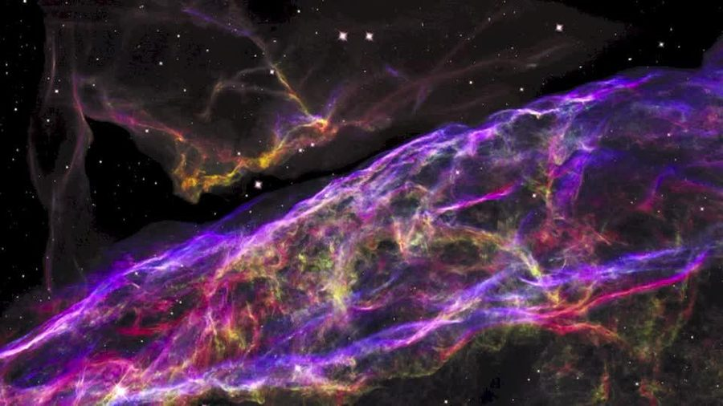
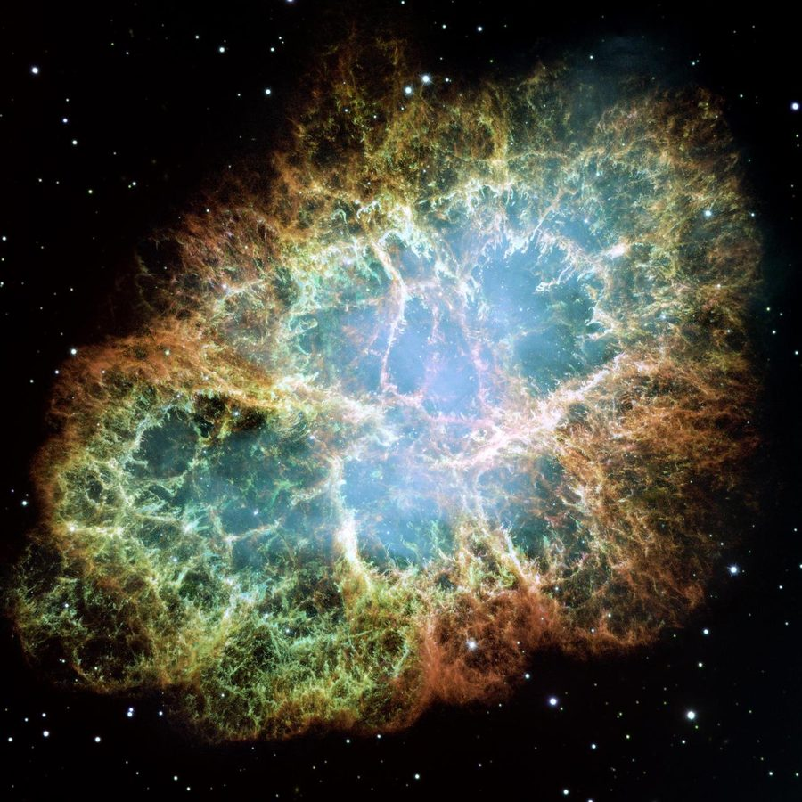
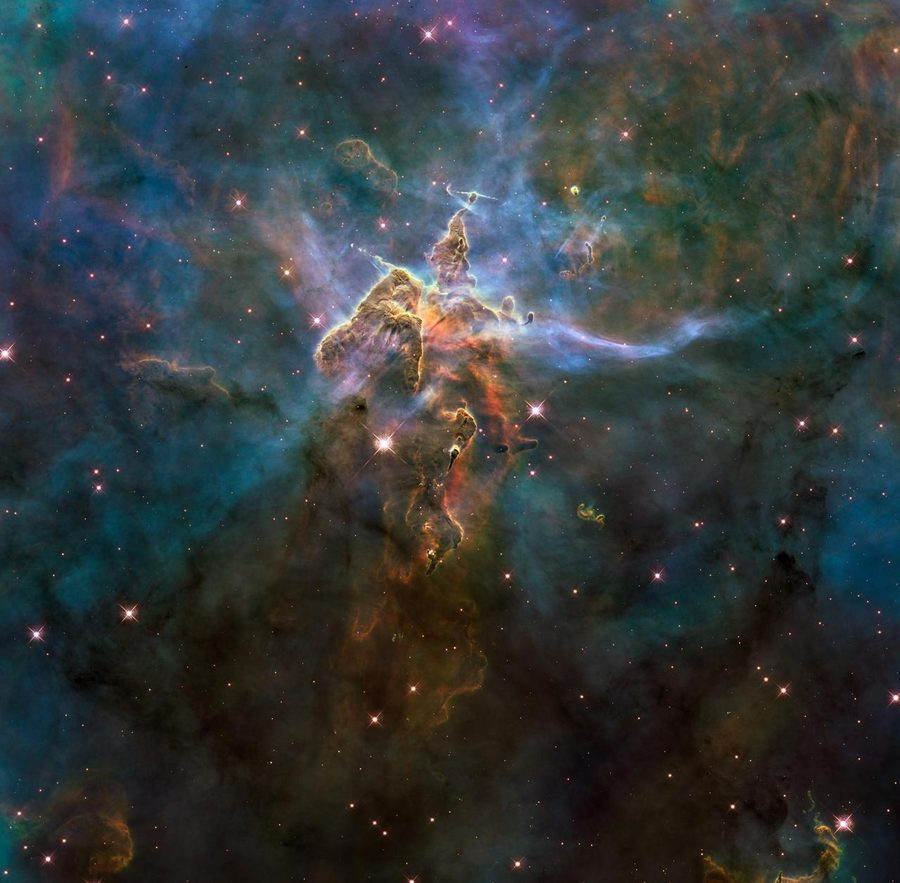
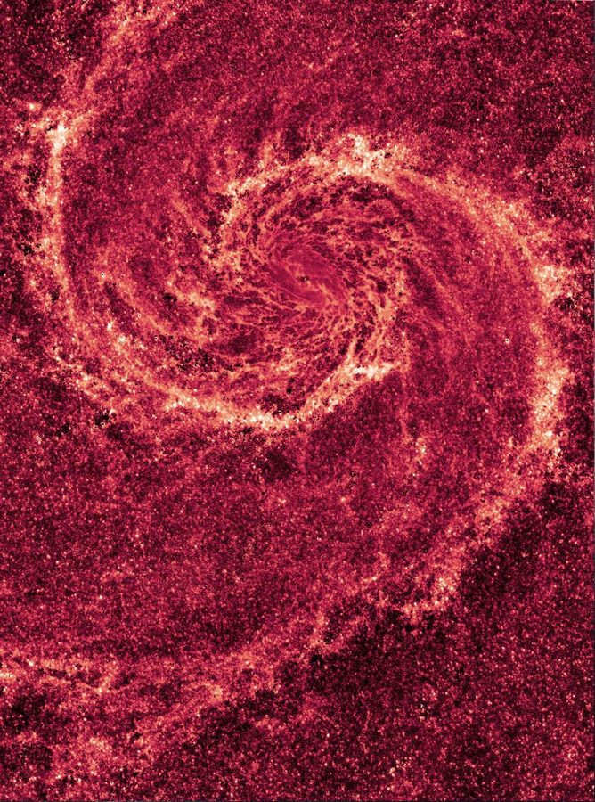

ION
Pencil Portraits
Ion Productions · Art
Music
Design
Art
Images
Home




Ion Productions · Art
Pencil Portraits
Scroll to walk in · tap a drawing to bring it close
Click the drawing to hang it back